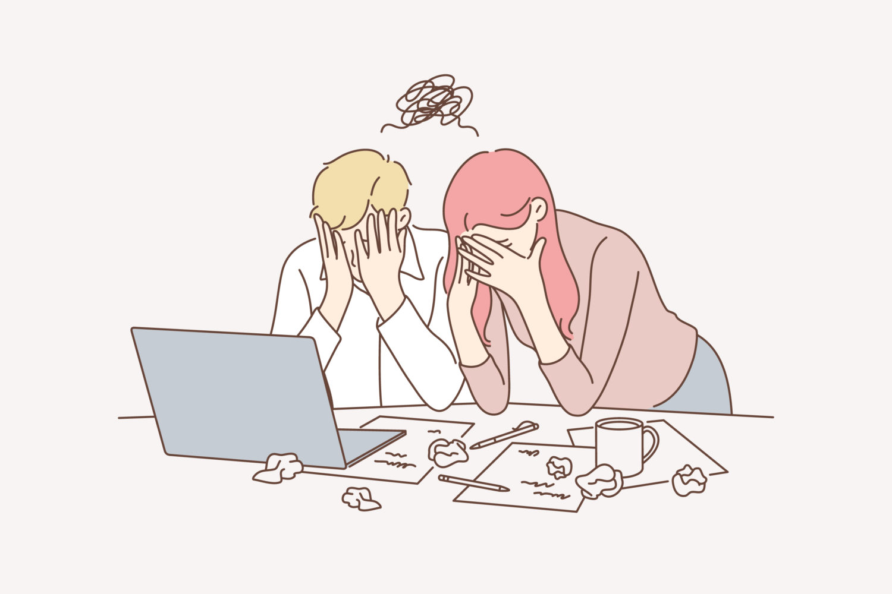

プログラミングスクールの卒業生は、使えないのか【結論：使えない】
こんにちは、マナブです。
独学でプログラミングを学んできました。
エンジニア時代の年収は、1,800万でした。
さて、先日に下記のツイートをしました。
よくある話で「プログラミングスクールを卒業しても、現場では使い物にならない」と言われます。たしかに事実ですが、そういった批判には「解決策」がない。
僕が思う解決策は、力不足でも「転職や仕事受注」にチャレンジすること。伸びる人は「挑戦」をしており、伸びない人は「勉強だけ」している😌— マナブ@バンコク (@manabubannai) November 13, 2020
僕が思う解決策は、力不足でも「転職や仕事受注」にチャレンジすること。伸びる人は「挑戦」をしており、伸びない人は「勉強だけ」している😌
この話題について、考えを書きます。
後半では「現場レベルに到達する手順」も解説しました。
YouTube版も公開しています
動画で学びたい方は、YouTubeからどうぞ。聞き流しで理解できます。
プログラミングスクールの卒業生は、使えないのか

結論は「使えない」と思います。
{kind=link}
他の分野でも同じ
全くネガティブな意見じゃないので、もう少しお付き合いください。
プログラミングスクールの卒業生は、基本的には使えないです。
というのも、実戦経験がないからですね。
間違いなく、研修を受けただけなら、使えないですよね。
その後の実戦を積まないと、コンサルとして成長できないはず。
プログラミングでも同じです。
もっというと、デザイナーでも同じはず。
デジハリという大学が有名ですが、僕の友人はデジハリ出身です。
しかしそこで学んでも就職できず、大学でアルバイトしていたみたいです。
その後にアルバイトとして「デザイン事務所」に就職し、徐々に戦力アップして、いまではフリーランスとして活躍しています。
スクールに、価値はないのか
ネット上の意見では「スクールの卒業生は使い物にならない＝採用しない＝スクールは必要ない＝優秀な人は独学する」みたいな意見があります。
この論理も納得できますが、、ちょっと違和感を感じることも事実です。
質問：昔からスクールはあったのか
僕はプログラミングを独学したのですが、その理由は「選択肢がなかったから」です。
当時は2013年とかで、ネットでググっても、マジで情報がなかったです。
エンジニアの「メモ書き」みたいなブログしかなく、WordPressのインストールだけで、３日くらい格闘していました。
どうなんですかね。僕も、分かりません。
スクール卒業生と、働いてます
記事の冒頭で「スクール卒業生は、使えない」と書きましたが、優秀な人もいます。
具体的には「スクール卒業後に、６〜12ヶ月くらい、自分で行動を続けた人」ですかね。
もはや「それ、スクール卒業後とは違うような…」と思われるかもですが、ネットの意見では「卒業生はすべてダメだ」という論調なので、そこは違うかなと思いました。
スクール卒業後に、個人で稼ぐことにコミットしている人は、根性ありますね。
根性ある人が現場経験を積んでいくと、マジで強いです。
僕は引き続き、スクール卒業生でも、そうじゃなくても、優秀な人を探して、一緒に働きたいです。
結論：あまり関係ない
というわけで、僕の最終結論です。
これが僕の結論です。
どのように学習しようが、なんでもいいと思います。
そして採用をする際には「その人の行動」に着目して判断したら、そこに嘘はつけないんじゃないですかね。
僕はフィリピン就職し、フィリピン人の採用活動をしていた時期があるのですが、そこで驚きました。
その時から「履歴書なんて、アテにならないな」と思っているので、行動に着目するようにしています。
スクール卒業生の方は、行動で証明しましょう。
その方が、良さそうです。
スクール卒業後に「現場レベル」に達する方法
記事後半では「どうやったら、現場で通用するか」を解説します。
結論としては、下記のツイートのとおり。
{kind=link}
プログラミングで「現場レベル」に到達する手順😌
・手順①：まずは基礎学習を終わらせる（3〜6ヶ月）
・手順②：自分のサービスやサイトを作って公開する
・手順③：小さな仕事を請ける、もしくは転職をする大切なことは、仕事を請けた段階で「初心者→プロ」になるということ。ここが境目だと思う
— マナブ@バンコク (@manabubannai) November 13, 2020
上記のとおり。これを順番に解説します。
手順①：まずは基礎学習を終わらせる（3〜6ヶ月）
まずは基礎学習を終えましょう。
スクールに行くでも、独学するでも、なんでもOKです。
参考までに、スクールや独学方法の記事を貼っておきます。
上記を参考に進めつつ、最低限のスキルを身に付けます。
最低限のスキルイメージとしては、例えば次のとおり。
- HTMLとCSSの理解。簡単なサイトを作り、サイト公開できる。
- PHPやRubyの基礎理解。掲示板やタスク管理アプリを作れる。
- JavaScriptの基礎理解。簡易的なチュートリアルを終えている。
例えばですが、上記のとおり。
ここは人によって意見が分かれると思いますが、これくらい知識があれば、まずはOKだと思います。
※Web制作に特化して学びたい場合は、PHP, Ruby, JavaScriptを学ぶよりも、HTML→CSS→WordPressという順番の方が効率的です。
手順②：自分のサービスやサイトを作って公開する
簡易知識が溜まったら、アウトプットしましょう。
例えば次のとおり。
- なにか掲示板を作ってみる
- 診断メーカーを作ってみる
- Twitterみたいなアプリを作る
上記のとおり。
これらを作れたら、問題ないかなと。
基礎学習から６ヶ月くらいで、しっかり勉強していたら達成できるはず。
ちなみに僕がこのレベルに達したのは、学習してから１年半後くらいです。
途中でブログにハマったりしたので、進みが遅れました。
しかしブログからSEOの知識を得たので、その後のエンジニアキャリアには、プラスになりました。
※補足：サービスを作ろうとすると、たぶん「あれ、、、どこから手を動かしたらいいんだ…」と固まるはず。その場合は「口コミサイト（掲示板）を構築する方法」あたりも参考です。
手順③：小さな仕事を請ける、もしくは転職をする
手順１〜２を完了したら、あとは実戦ですね。
- 簡単なサイト制作案件を請ける
- 簡単なシステム構築案件を請ける（※顧客管理など）
- もしくは、就職して学ぶのもあり
上記のとおり。
このように「実戦訓練」を積むことで、徐々に成長します。
それも、もちろんOKです。
勉強に正解の道なんてありませんので、自分で考えつつ、良さそうな方向に進めばOKかなと思います。
なお、転職を考えている方は「IT系に強い転職サイト・転職エージェント３選」の記事もどうぞ。
僕は「独学４ヶ月→ITベンチャーに飛び込む」という感じで成長しました。
当時はインターンで給料０円でしたが、鬼のように成長できました。
プログラミング知識だけじゃなく、働き方に対するマインドも学べて、最高でした。
学生なら、インターンもオススメです。
楽しく続くなら、どうせ余裕
というわけで、今回は以上です。
初心者の方が読んだときに、なるべく未来を見通せて、そして「安心して動ける」という記事内容を目指しました。
しかし、最後に「すべて崩壊」させます。
僕の内容は、鵜呑みにしないでください
記事内容を「参考にする」はOKですが、これが「完全な正解」とは思わなくてOKです。
僕の経験をもとに、最大限で書きました。しかし僕は完璧じゃないし、エンジニアとしても超優秀な訳でもないです。普通レベルだと思います。
だから話半分で聞いていただき、その上で最重要なことを書きます。
これですね。プログラミングをやってみて、そこで「お、楽しいかも」という気持ちを探すことが大切です。
続くことを継続したら、確実に「平均レベル」は到達しますので、そしたら「その道で食べること」が可能。
嫌じゃないことで稼げたら、ストレスも減りますよね。
まずはここだと思います。
というわけで、これくらいで終わりにします。
お疲れさまです。
P.S：普段の僕は「Twitter」を軸に発信しています。また最近は「Webマーケ教材」の作成に注力しており、ネットで稼ぐスキルを学べます。ブログの更新通知はtwitterからお知らせいたします。